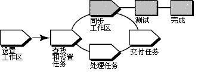

概述
下图说明了 UCM 工作流程。 此工具向导中讨论了加阴影的区域。

在 UCM 模型中，从多个源交付的活动（工作）会集成和组织到基线中。通常，基线要经过测试和错误修正循环，直至达到满意的稳定级别。当基线达到该级别时，项目经理将其指定为流的建议基线。
要以建议的基线处理一组版本，则重新为开发工作空间定基。 当交付活动时，要使必要合并的数量最小，则使用每个新建议的基线（当其变为可用时）重新为开发工作空间定基。
此工具向导在运行 Microsoft Windows 时适用。
工具步骤
重新定基操作包括以下任务：
-
准备开发视图
-
启动重新定基操作
-
合并文件
-
测试开发工作空间
-
完成同步操作
 有关此过程步骤的详细信息，请参考以下 ClearCase
联机帮助主题： 有关此过程步骤的详细信息，请参考以下 ClearCase
联机帮助主题：
-
Comparing files, directories, and versions
-
Merging files, directories, and versions
-
在开始重新定基操作之前，检入所有工作。ClearCase 只更新检入的文件和目录。ClearCase Find Checkouts 实用程序查找视图中的已检出版本。
-
浏览到开发工作空间。在左边窗格中，右键单击视图目录，然后单击 ClearCase > 查找检出。
有关查找和检出工作的详细指示信息，请参考
ClearCase 联机帮助中 Finding checked out elements 主题。
-
从连接到开发流的视图开始重新定基操作。
-
“重新定基流预览”对话框显示项目的建议基线以重新定基。当开始重新定基操作时，它执行文件合并，并且在遇到必须手动解决的文件冲突时通知您。
有关此过程的详细指示信息，请参考
ClearCase 联机帮助中的 To start a rebase operation 主题。
-
ClearCase 将开发流中的工作和集成流中的工作合并起来，自动完成不重要的合并。
-
如果发生严重的合并冲突，则同步操作会启动 DiffMerge 实用程序并提示您解决冲突。
有关此过程中步骤的详细信息，请参考 ClearCase 联机帮助中的
Merging files, directories, and versions主题。
-
构建和测试开发视图中的源文件，以验证已使用基线中的版本成功构建未交付的活动。
-
在重新定基之后，构建和测试开发视图中的源文件，以验证已使用基线中的版本成功构建了未交付的活动。
完成重新定基操作由两个任务组成：检入所有合并结果和将操作状态更改为完成。
-
测试工作之后，在“同步状态”对话框中单击完成。
-
ClearCase 检入所有已检出到开发视图的版本并通知开发流重新定基操作完成。
-
单击关闭退出该对话框。
 有关每一步的详细信息，请参阅 ClearCase
手册 Developing Software 中的“Rebasing Your Work Area”。 有关每一步的详细信息，请参阅 ClearCase
手册 Developing Software 中的“Rebasing Your Work Area”。
|